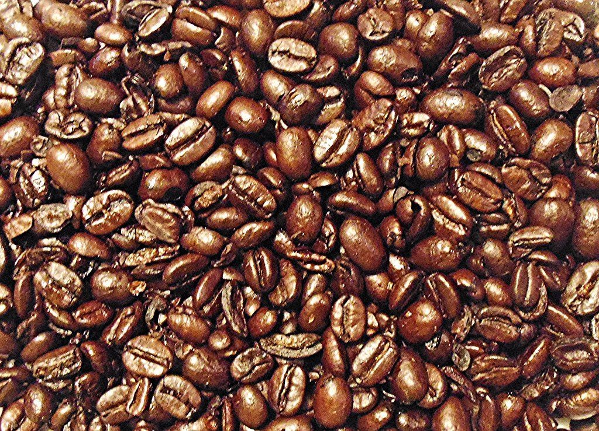

1枚目のふるい / 目開き 2000μm
いちばん粗い目から、はじめます。
奈良県生駒市北大和にあるパン屋(ベーカリー)「デメララベーカリーファクトリーキッチンなら」のご案内ページです。営業時間やメニューなど、詳しいことは準備中。まずはInstagramをのぞいてみてください。

制作側の連想
粒の大きさを、ふるいで見せる。
屋号の由来は分かりません。制作側は「パンの原料は粉や粒」というところから、粒の大きさを網目で選り分ける「ふるい」を連想し、五枚のふるいにこのサイトの五ページを見立てました。1枚目が最も粗く、ページが進むほど目が細かくなります。制作側の連想で、お店の理念・由来とは無関係です。
粗い粒の見本
目が粗いと、残るもの。
写真は国外・撮影地不明のフリー素材のイメージです。お店のものではありません。


ご案内
お店のこと(確認できたものだけ)
| 所在地 | 〒630-0121 奈良県生駒市北大和1丁目23-1 |
|---|---|
| 電話 | 0743-85-5222 |
| 営業時間 | 準備中 |
| 定休日 | 準備中 |
| ご予約 | 準備中 |
| 駐車場 | 準備中 |
| SNS | Instagram @demerara_n |